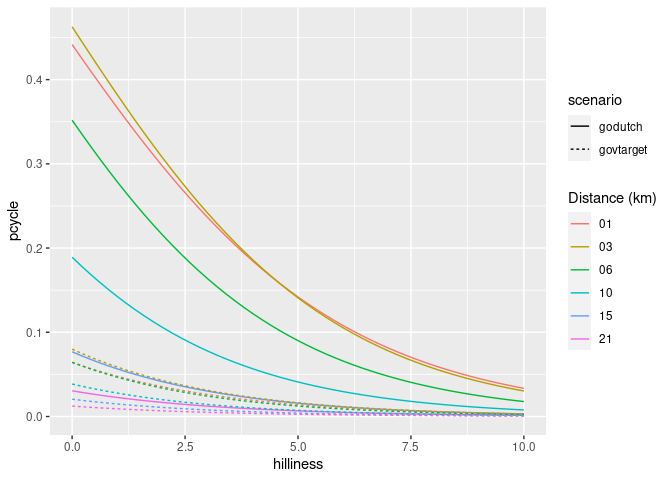

The goal of pct is to make the data produced by the Propensity to Cycle Tool (PCT) easier to access and reproduce. The PCT a research project and web application hosted at www.pct.bike. For an overview of the data provided by the PCT, clicking on the previous link and trying it out is a great place to start. An academic paper on the PCT provides detail on the motivations for and methods underlying the project.
A major motivation behind the project was making transport evidence more accessible, encouraging evidence-based transport policies. The code base underlying the PCT is publicly available (see github.com/npct). However, the code hosted there is not easy to run or reproduce, which is where this package comes in: it provides quick access to the data underlying the PCT and enables some of the key results to be reproduced quickly. It was developed primarily for educational purposes (including for upcoming PCT training courses) but it may be useful for people to build on the the methods, for example to create a scenario of cycling uptake in their town/city/region.
In summary, if you want to know how PCT works, be able to reproduce some of its results, and build scenarios of cycling uptake to inform transport policies enabling cycling in cities worldwide, this package is for you!
Installation
# from CRAN
install.packages("pct")You can install the development version of the package as follows:
remotes::install_github("ITSLeeds/pct")Load the package as follows:
Documentation
Probably the best place to get further information on the PCT is from the package’s website at https://itsleeds.github.io/pct/
There you will find the following vignettes, which we recommend reading, and reproducing and experimenting with the code contained within to deepen your understanding of the code, in the following order:
- A ‘get started’ introduction to the PCT and associated R package: https://itsleeds.github.io/pct/articles/pct.html
- Getting and using PCT data, an article showing how to get and use data from the PCT, based on a case study from North Yorkshire
- A training vignette providing more detailed guidance on data provided by the PCT package, with interactive exercises based on a case study of the Isle of Wight
- A vignette show how to use the data provided by the package to estimate cycling uptake in UK cities
- A vignette demonstrating the international applicability of the PCT method, with help from this and other R packages
You will also find there documentation for each of the functions at itsleeds.github.io/pct/reference/. Below we describe some of the basics.
Get PCT data
From feedback, we hear that the use of the data is critical in decision making. Therefore, one area where the package could be useful is making the data “easily” available to be processed.
-
get_pct: the basic function to obtain data available here.
The rest of these should be self explanatory.
get_pct_centroidsget_pct_linesget_pct_rnetget_pct_routes_fastget_pct_routes_quietget_pct_zonesuptake_pct_godutchuptake_pct_govtarget
For example, to get the centroids in West Yorkshire:
centroids = get_pct_centroids(region = "west-yorkshire")
plot(centroids[, "geo_name"])
Likewise to download the desire lines for “west-yorkshire”:
lines = get_pct_lines(region = "west-yorkshire")
lines = lines[order(lines$all, decreasing = TRUE), c("all")]
plot(lines[1:10,], lwd = 4)
# view the lines on a map
# mapview::mapview(lines[1:3000, c("geo_name1")])Estimate cycling uptake
An important part of the PCT is its ability to create model scenarios of cycling uptake. Key to the PCT uptake model is ‘distance decay’, meaning that short trips are more likely to be cycled than long trips. The functions uptake_pct_govtarget() and uptake_pct_godutch() implement uptake models used in the PCT, which use distance and hilliness per desire line as inputs and output the proportion of people who could be expected to cycle if that scenario were realised. The scenarios of cycling uptake produced by these functions are not predictions of what will happen, but illustrative snapshots of what could happen if overall propensity to cycle reached a certain level. The uptake levels produced by Go Dutch and Government Target scenarios (which represent increases in cycling, not final levels) are illustrated in the graph below (other scenarios could be produced, see the source code see how these models work):
distances = 1:20
hilliness = 0:5
uptake_df = data.frame(
distances = rep(distances, 6),
hilliness = rep(hilliness, each = 20)
)
p_govtarget = uptake_pct_govtarget(
distance = uptake_df$distances,
gradient = uptake_df$hilliness
)
p_godutch = uptake_pct_godutch(
distance = uptake_df$distances,
gradient = uptake_df$hilliness
)
uptake_df = rbind(
cbind(uptake_df, scenario = "govtarget", pcycle = p_govtarget),
cbind(uptake_df, scenario = "godutch", pcycle = p_godutch)
)
library(ggplot2)
ggplot(uptake_df) +
geom_line(aes(
distances,
pcycle,
linetype = scenario,
colour = as.character(hilliness)
)) +
scale_color_discrete("Gradient (%)")
The proportion of trips made by cycling along each origin-destination (OD) pair therefore depends on the trip distance and hilliness. The equivalent plot for hilliness is as follows:
distances = c(1, 3, 6, 10, 15, 21)
hilliness = seq(0, 10, by = 0.2)
uptake_df =
data.frame(
expand.grid(distances, hilliness)
)
names(uptake_df) = c("distances", "hilliness")
p_govtarget = uptake_pct_govtarget(
distance = uptake_df$distances,
gradient = uptake_df$hilliness
)
p_godutch = uptake_pct_godutch(
distance = uptake_df$distances,
gradient = uptake_df$hilliness
)
uptake_df = rbind(
cbind(uptake_df, scenario = "govtarget", pcycle = p_govtarget),
cbind(uptake_df, scenario = "godutch", pcycle = p_godutch)
)
ggplot(uptake_df) +
geom_line(aes(
hilliness,
pcycle,
linetype = scenario,
colour = formatC(distances, flag = "0", width = 2)
)) +
scale_color_discrete("Distance (km)")
Note: if distances or gradient values appear to be provided in incorrect units, they will automatically be updated:
distances = uptake_df$distances * 1000
hilliness = uptake_df$hilliness / 100
res = uptake_pct_godutch(distances, hilliness, verbose = TRUE)
#> Distance assumed in m, switching to km
#> Gradient assumed to be gradient, switching to % (*100)The main input dataset into the PCT is OD data and, to convert each OD pair into a geographic desire line, geographic zone or centroids. Typical input data is provided in packaged datasets od_leeds and zones_leeds, as shown in the next section.
Reproduce PCT for Leeds
This example shows how scenarios of cycling uptake, and how ‘distance decay’ works (short trips are more likely to be cycled than long trips).
The input data looks like this (origin-destination data and geographic zone data):
class(od_leeds)
#> [1] "tbl_df" "tbl" "data.frame"
od_leeds[c(1:3, 12)]
#> # A tibble: 10 × 4
#> area_of_residence area_of_workplace all bicycle
#> <chr> <chr> <dbl> <dbl>
#> 1 E02002363 E02006875 922 43
#> 2 E02002373 E02006875 1037 73
#> 3 E02002384 E02006875 966 13
#> 4 E02002385 E02006875 958 52
#> 5 E02002392 E02006875 753 19
#> 6 E02002404 E02006875 1145 10
#> 7 E02002411 E02006875 929 27
#> 8 E02006852 E02006875 1221 99
#> 9 E02006861 E02006875 1177 56
#> 10 E02006876 E02006875 1035 10
class(zones_leeds)
#> [1] "sf" "data.frame"
zones_leeds[1:3, ]
#> old-style crs object detected; please recreate object with a recent sf::st_crs()
#> old-style crs object detected; please recreate object with a recent sf::st_crs()
#> Simple feature collection with 3 features and 6 fields
#> Geometry type: MULTIPOLYGON
#> Dimension: XY
#> Bounding box: xmin: -1.727245 ymin: 53.90046 xmax: -1.294313 ymax: 53.94589
#> Geodetic CRS: WGS 84
#> objectid msoa11cd msoa11nm msoa11nmw st_areasha st_lengths
#> 2270 2270 E02002330 Leeds 001 Leeds 001 3460674 10002.983
#> 2271 2271 E02002331 Leeds 002 Leeds 002 21870986 26417.665
#> 2272 2272 E02002332 Leeds 003 Leeds 003 2811303 8586.548
#> geometry
#> 2270 MULTIPOLYGON (((-1.392046 5...
#> 2271 MULTIPOLYGON (((-1.340405 5...
#> 2272 MULTIPOLYGON (((-1.682211 5...The stplanr package can be used to convert the non-geographic OD data into geographic desire lines as follows:
library(sf)
#> Linking to GEOS 3.11.1, GDAL 3.6.2, PROJ 9.1.1; sf_use_s2() is TRUE
desire_lines = stplanr::od2line(flow = od_leeds, zones = zones_leeds[2])
#> Creating centroids representing desire line start and end points.
#> old-style crs object detected; please recreate object with a recent sf::st_crs()
#> old-style crs object detected; please recreate object with a recent sf::st_crs()
#> old-style crs object detected; please recreate object with a recent sf::st_crs()
#> old-style crs object detected; please recreate object with a recent sf::st_crs()
#> old-style crs object detected; please recreate object with a recent sf::st_crs()
#> old-style crs object detected; please recreate object with a recent sf::st_crs()
plot(desire_lines[c(1:3, 12)])
We can convert these straight lines into routes with a routing service, e.g.:
segments_fast = stplanr::route(l = desire_lines, route_fun = cyclestreets::journey)
#> Most common output is sfWe got useful information from this routing operation, we will convert the route segments into complete routes with dplyr:
library(dplyr)
#>
#> Attaching package: 'dplyr'
#> The following objects are masked from 'package:stats':
#>
#> filter, lag
#> The following objects are masked from 'package:base':
#>
#> intersect, setdiff, setequal, union
routes_fast = segments_fast %>%
group_by(area_of_residence, area_of_workplace) %>%
summarise(
all = unique(all),
bicycle = unique(bicycle),
length = sum(distances),
av_incline = mean(gradient_smooth) * 100
)
#> `summarise()` has grouped output by 'area_of_residence'. You can override using
#> the `.groups` argument.The results at the route level are as follows:
plot(routes_fast)
Now we estimate cycling uptake:
routes_fast$uptake = uptake_pct_govtarget(distance = routes_fast$length, gradient = routes_fast$av_incline)
routes_fast$bicycle_govtarget = routes_fast$bicycle +
round(routes_fast$uptake * routes_fast$all)Let’s see how many people started cycling:
Nearly 1000 more people cycling to work, just in 10 desire is not bad! What % cycling is this, for those routes?
sum(routes_fast$bicycle_govtarget) / sum(routes_fast$all)
#> [1] 0.07985803
sum(routes_fast$bicycle) / sum(routes_fast$all)
#> [1] 0.03963324It’s gone from 4% to 11%, a realistic increase if cycling were enabled by good infrastructure and policies.
Now: where to prioritise that infrastructure and those policies?
routes_fast_linestrings = sf::st_cast(routes_fast, "LINESTRING")
rnet = stplanr::overline(routes_fast_linestrings, attrib = c("bicycle", "bicycle_govtarget"))
lwd = rnet$bicycle_govtarget / mean(rnet$bicycle_govtarget)
plot(rnet["bicycle_govtarget"], lwd = lwd)
We can view the results in an interactive map and share with policy makers, stakeholders, and the public! E.g. (see interactive map here):
mapview::mapview(rnet, zcol = "bicycle_govtarget", lwd = lwd * 2)
Limitations
- This package does not contain code to estimate cycling uptake associated with intrazonal flows and people with no fixed job data, although the datasets downloaded with the
get_pct_centroids()functions provide estimated uptake for intrazonal flows. - This package currently does not contiain code to estimate health benefits
Testing the package
Test the package with the following code:
remotes::install_github("ITSLeeds/pct")
devtools::check()